Fjenneslev
Grobkörniger, grauer Granit
Höhe: 220 cm
Größte Breite: 126 cm
der Inschriftenfläche: 63 cm
Runenhöhe: 6,5 - 9 cm
Runeninschrift :
Sasser errichtete den Stein und baute die Brücke.

Fjenneslev
Listennummer : DR 238 / DK Sj 60
| Navidaten: 55.43317 11.68734 oder: Langtoftevej 2A, 4173 Fjenneslev |
Transliteration: + sasur : risþi : stin : an : karþi : bru :
Der Stein wurde um 1830 beim Abriss des alten, um die Fjenneslev Kirche führenden Walls gefunden, hat aber wohl ohne Zweifel ursprünglich in einer 3 - 4 km südwestlich von Fjenneslev gelegenen Niederung gestanden, wo eine kleine Brücke liegt, die über die Tuel Au hinwegführt, und an die sich heute noch der Name Sasserbro knüpft, d.h. Brücke des Sasser. Seit 1440 ist dieser Name in Schriftstücken belegt. Die Steinkirche hat ihren Ursprung um 1125. Sie wurde als Hofkirche von Skjalm Hvides Sohn Asser Rig gebaut, der den Hof in Fjenneslev von seinem Vater geerbt hatte (siehe unten).
Der Name Fjenneslev weist darauf hin, dass es sich um ein altes Dorf handelt. Städte, deren Namen auf lev enden, wurden vor der Wikingerzeit gegründet, die um das Jahr 800 begann. Diese Städte liegen oft auf gutem Land, die Siedlungen waren noch nicht so dicht, dass es notwendig war, das schlechte Land zu bebauen. Die erste Silbe in Lev-Städten ist oft ein männlicher Name, Lev bedeutet Nachlass oder Erbschaft.
Der Runenstein wurde zunächst bei der Kirche abgelegt, bevor er 1910 auf dem Kirchhof aufgestellt wurde. Im Jahr 1982 wurde der Stein unter Denkmalschutz gestellt und an seinem heutigen Platz errichtet.
In der Spätwikingerzeit galt der Bau von Brücken und Straßen vielfach als christliches gutes Werk, da dies den Priestern oft erst ermöglichte überhaupt die Mitglieder ihrer weit verstreuten Gemeinde aufzusuchen. So verwundert es eigentlich nicht, an der Spitze des übermannshohen Steines das christliche Kreuz eingemeißelt zu finden. Die Inschrift wird auf die Zeit von ca. 1000 - 1050 n. Chr. geschätzt. Die einzelne Textzeile beginnt mit dem Kreuz und wird von oben nach unten gelesen.
Bei meinem letzten Besuch am 31.08.2016 konnte ich diese Fotos in Fjenneslev machen:
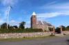 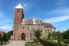 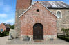 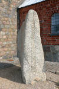 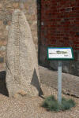 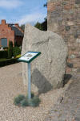 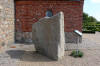


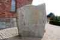 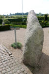 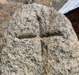 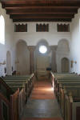 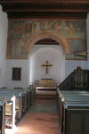 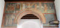 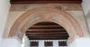 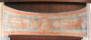


Im Jahre 1840 kam von Hans Kristian Rask (1805-75) die Ausgabe Morskabslsning for den danske Almue, Nr. 14-26, heraus. Darin bringt er in Heft Nr. 21, Freitag, 22.05.1840, ab der S. 325 bis S. 330 den Beitrag "Fjenneslevlille". Darin wird berichtet, dass im Jahre 1128 die Zwillingsbrüder Absalon (*1128 - 21.03.1201 - Bischof von Roskilde und Lund) und Esbern Snare (*1128 - 21.03.1201) in Fjenneslev geboren wurden. Beide waren Berater des dänischen König Waldemar I. Ihr Vater Asser Rig (etwa 10801151) und seine Frau Inge Eriksdotter (Enkelin von Knud der Große) waren die Stifter der Kirche von Fjenneslev. Noch heute findet sich eine Kalkmalerei mit der Darstellung der Kirchenstifter auf dem nördlichen Teil des Triumphbogen in der Kirche - siehe unten.
Auf der Seite 329 findet sich dann in Rasks Werk die Passage: "Paa Kirkegaarden Sydvest for Kirken ligger en stor Runesteen. Den har siddet i Diget, og er væltet hen for at gjemmes i Vaabenhuset, men da den var for svær, blev den liggende paa Kirkegaarden. Paa denne Steen, sige Bonderne, staaer at læse, at der under Kirketaarnet ligger nedgravet saa meget guld, at Taarneren atter kunne rejses, hvis de falde.Sagnet maa være nyere, men det er kjønt; Indskriften er, saavidt jeg kan Forstaae den, ganske almindelig og uden færdeles Betydning."
Übersetzung: "Auf dem Friedhof südwestlich der Kirche befindet sich ein großer Runenstein. Es saß in der Kirchhofeinfriedung und wurde herausgenommen, um im Waffenhaus aufgestellt zu werden, aber da er zu schwer war, blieb er auf dem Kirchhof. Auf diesem Stein, sagen die Bauern, steht geschrieben, dass unter dem Kirchturm so viel Gold vergraben ist, dass der Turm bei einem Einsturz damit wieder errichtet werden könnte. Die Legende muss neuer sein, aber sie ist schön; Die Inschrift ist, soweit ich es verstehen kann, ganz gewöhnlich und ohne große Bedeutung."
Dazu gibt es auch noch die Geschichte, wonach Asser Rig in den Krieg ziehen musste, während seine Frauz schwanger war. Als Asser zu Pferde stieg, bückte er sich und flüsterte Inge zu: "Hören Sie, meine liebe Frau Inge, wenn Sie einen Sohn gebären, dann bauen Sie eine Kirche mit Turm, wenn Sie eine Tochter gebären, dann nur eine Spitze setzen. Als Asser auf dem Heimweg vom grünen Ufer aus zwei Türme sah, verstand er, dass seine Frau zwei Söhne zur Welt gebracht hatte (Esbern und Absalon).
Anderswo heißt es aber auch: "Die Geschichte mit den beiden Türme ist nur eine Legende. Esbern und Absalon waren keine Zwillinge. Esbern war einige Jahre älter als Absalon. Die Türme wurden auch nicht gleichzeitig mit dem Rest der Kirche gebaut. Die Türme wurden nicht von den Eltern zum Gedenken an ihre beiden Söhne errichtet, sondern umgekehrt, so dass die Söhne die Türme zu ihrer Ehre an die elterliche Kirche angebaut haben. Gleichzeitig schmückten die Söhne die Kirche auch mit Fresken, darunter ein Fresko der Eltern, die die Kirche Gott übergaben."
Bekannt wurden diese Geschichten durch das Gedicht von Adam Oehlenschläger (*14.11.1779 - 20.01.1850, dänischer Nationaldichter der Romantik) aus dem Jahr 1811 mit dem Titel "De tvende Kirketaarne" (Der zweite Kirchturm).
► Wir haben es hier also mit einem der ältesten und einflussreichsten Adelsgeschlechter Dänemarks - den Hvide (Weiße) - zu tun! Deren Name ist auf den Nachname ihres Stammvaters Skjalm Hvide zurückzuführen. Ein Nachkomme war der o.g. Bischof Absalon auf dessen Veranlassung hin Saxo Grammaticus im ca. 10 km westlich gelegenen Kloster Sorø seine berühmte "Gesta Danorum" (Die Taten der Dänen) niedergeschrieben hat.◄
Eigenes Foto vom 31.08.2016
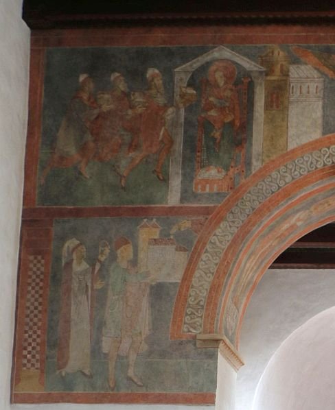
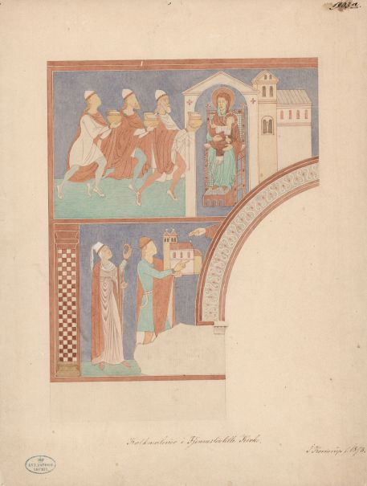
Jacob Kornerup (*19.11.1825 - 09.03.1913, dänischer Archäologe und Zeichner aus Roskilde) - Zeichnung von 1873 - Buntstifte - Originalgröße: 28 x 37 cm - Quelle: Digitale Sammlung des Nationalmuseums Kopenhagen - Lizenz: Public Domain
Einen frühen Aufschrieb der Runeninschrift fand ich gestern - 03.01.2022 - per Zufall bei Recherchen zur Person Laurits Albert Winstrup (*28.01.1815 - 04.04.1889, dänischer Architekt und königlicher Bauinspektor) über die Internetseiten von Danmarks Kunstbibliotek im Zusammenhang mit meinen Ausarbeitungen zum Runenstein von Sjelle. Unter deren Rubrik "Skitsebøger" finden sich zu der Person Laurits Albert Winstrup mehrere digitalisierte Skizzenbücher, darunter auch das aus dem Jahre 1841.
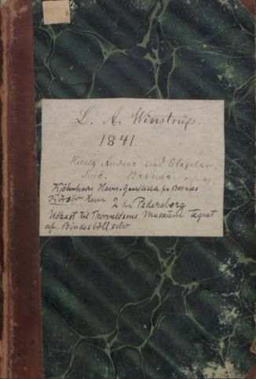
Darin hat er auf der Seite 39 in der pdf-Datei zwei Zeichnungen der Kirche von Pedersborg abgebildet (ca. 8,5 km Luftlinie nordwestlich von der Fjenneslev Kirche entfernt). Eine Zeichnung ist auf einem dunkleren, losen Blatt, auf dessen Rückseite sich dann auf der S. 40 der pdf-Datei diese Abzeichnung der Runeninschrift findet.
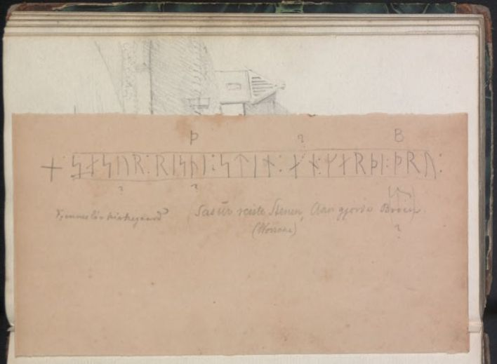
Meines Wissens findet diese Wiedergabe der Inschrift durch Laurits Albert Winstrup bislang in der Literatur nirgendwo Erwähnung!
Just Mathias Thiele (*13. Dezember 1795 - 9. November 1874, dänischer Schriftsteller und Kunsthistoriker) schrieb 1843 in seinem Werk "Danmarks folkesagn", Band 1, Seite 198, diesen Eintrag: "
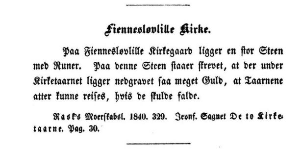
Also auch hier neben der einfachen Erwähnung des großen Steins mit Runenzeichen auf dem Kirchhof die Geschichte mit dem reichen Goldschatz, der ausreichend sei für den Neubau der Türme, falls sie einmal einstürzen sollten.
Durch P. G. Thorsen (*07.08.1811 - 06.05.1883, Bibliothekar, Runenforscher und Historiker) wird in seinem Werk "Runemindesmærkerne i Slesvig, 1864" auf der S. 277 diese Abbildung - eine Zeichnung aus dem Jahre 1862 von Magnus Petersen (*04.09.1827 - 01.02.1917, Archäologischer Zeichner und Restaurator) - wiedergegeben. P. G. Thorsen bringt ergänzend in seinem Band "Jyllands Runemindesmærker, Afbildninger og Text, II. Text, 1880" auf der S. 262 nur wenige Zeilen zu diesem Runenstein.
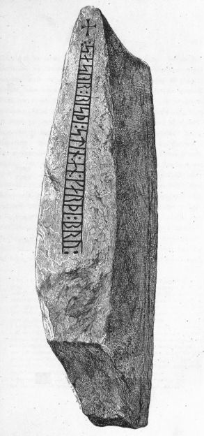
Ludv. F. A. Wimmer (*07.02.1839 - 29.04.1920, Philologe und Runenforscher) führt in seinem Werk "De danske runemindesmærker undersøgte og tolkede af Ludv. F. A. Wimmer, Andet Bind, Runestenene i Jylland og på øerne. 1899-1901" auf der S. 467 an: "En afbildning af stenen offenlig-gjordes første gang af P. G. Thorsen i De danske Runemindesm. I, s. 277" - Übersetzung: "Eine Darstellung des Steins wurde erstmals von P. G. Thorsen in De danske Runemindesm veröffentlicht. I, S. 277". Er wusste demnach nichts von der Aufzeichnung Laurits Albert Winstrups, oder er hat dies nur nicht in seinen Ausarbeitungen erwähnt, da dieser die Inschrift nur abgeschrieben hat. Auch in dem Werk von Ludv. F. A. Wimmer finden sich zwei Zeichnungen von Magnus Petersen, der diese im Jahr 1879 angefertigt hat. Ludv. F. A. Wimmer hat den Stein vor Ort am 01. August 1879 untersucht und darüber die linke Zeichnung nochmals überarbeitet.
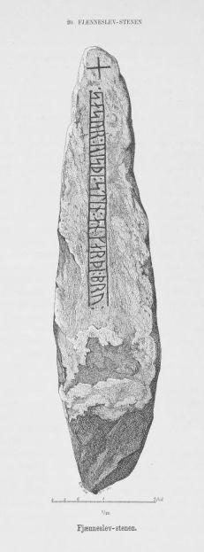
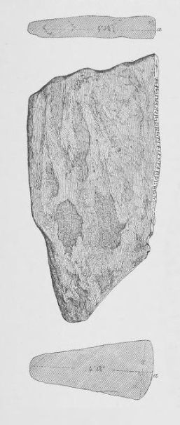
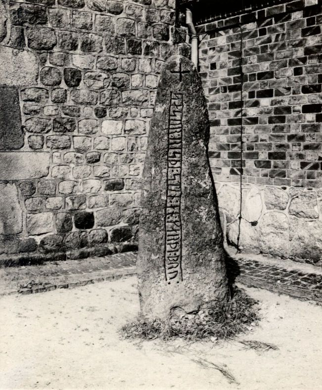
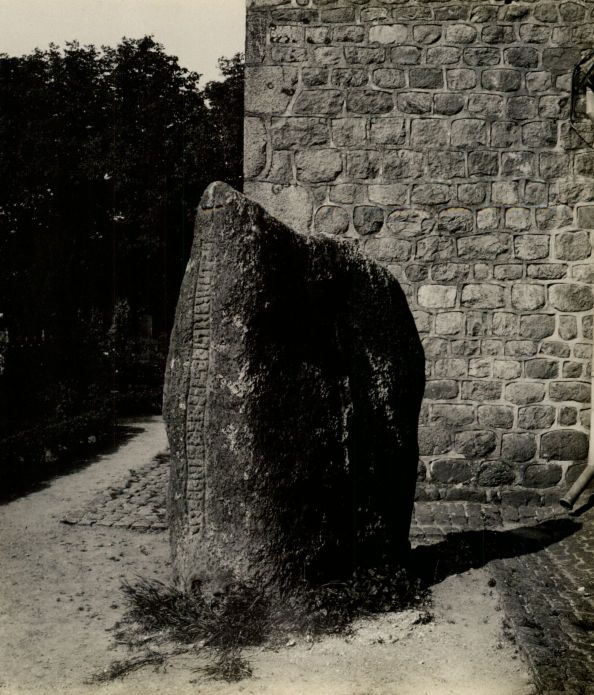
Der digitalen Sammlung des Nationalmuseums Kopenhagen kann man u.a. diese beiden s-w Fotos vom 08. April 1931 entnehmen, die der Runologe Erik Moltke angefertigt hat - Lizenz jeweils: CC-BY-SA
Im Vorfeld zu dem 2016 erschienenen Buch von Lisbeth M. Imer (*1973, Runologin am Nationalmuseum Kopenhagen) "Danmarks Runesten - en fortælling" reiste sie Runologin mit dem Fotografen Roberto Fortuna zur Bestandsaufnahme durch die Lande. Dieser hat die Runensteine abends bei Dunkelheit mit Schräglicht aufgenommen und darüber wirklich herausragende Fotos erzielt. Dieses Foto entstand am 14. März 2012.
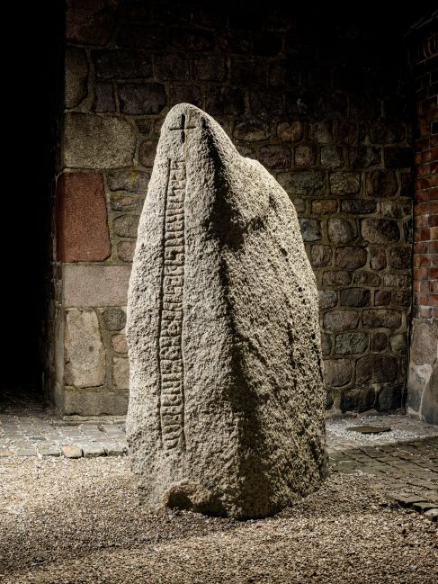
Digitale Sammlung des Nationalmuseums Kopenhagen - Lizenz: CC-BY-SA 3.0
Über die dänische Runendatenbank findet man hier alle Infos zu diesem Runenstein.
Der entsprechende Eintrag zu dem Runenstein in "Fund og Fortidsminder" ist hier verlinkt. Darin ist inzwischen dieser Zustandsbericht des Steinrestaurators Leif Vognsen aus dem Jahr 2018 eingebettet.
Über diesen Link finden sich zu dem Runenstein Informationen des Forschungsprojektes "Runes" der Akademie der Wissenschaften zu Göttingen.
Hier noch die Infotafel, die inzwischen neben dem Runenstein aufgestellt wurde - hier als pdf Datei abrufbar:
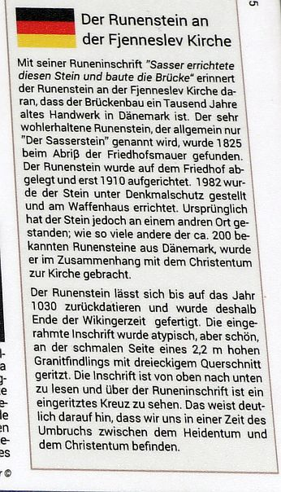
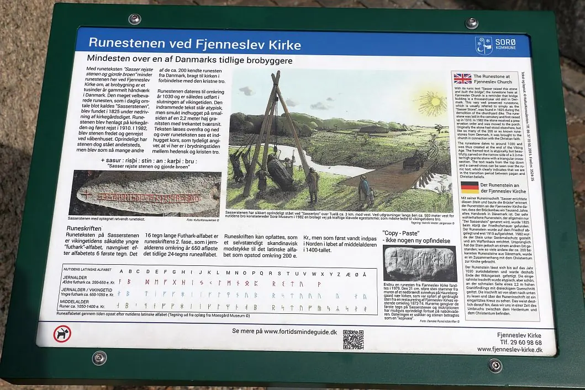
Über diesen Link kann man die Webseite von "Danmarks Fortidsminder" zum Runenstein von Fjenneslev in dänischer Sprache mit zahlreichen Infos abrufen.
Unter der Überschrift "360 graders foto Fjenneslev-stenen og Kirke" kann man auf YouTube eine Zusammenstellung verschiedener Fotos - zum Teil als 360° Foto - anschauen, wobei der Runenstein ausführlich abgehandelt wurde.
Auf den Webseiten des Dänischen Nationalmuseums - Danmarks Kirker - kann man eine in dänischer Sprache gehaltene 17-seitige, bebilderte Abhandlung als pdf-Datei zur Baugeschichte/Innenausstattung der Kirche von Fjenneslev aus dem Jahr 1936 abrufen.
Fjenneslev 2 - Quaderstein
Listennummer : DR kein / DK Sj 61
Transliteration: + sasur : ris-
1979 wurde dem Museum im 10 km westlich von Fjenneslev entfernten Sorø ein Quaderstein übergeben, der eine Runenritzung aufwies und der anschließend von Runologen des Nationalmuseums Kopenhagen untersucht wurde. Es stammt von einem Bauernhof, der in den 1950er Jahren niederbrannte. Laut der Besitzerin Orla Petersen befand sich der Stein in der Innenwand eines Schweinestalls, den ihr Großvater teilweise aus recyceltem Material aus den Kirchtürmen der Fjenneslev-Kirche erbaut hatte. Im Zuge der Restaurierung der Kirche Mitte des 19. Jahrhunderts waren viele Steine angefallen. Die Inschrift wurde von dem Runologen Erik Moltke seinerzeit als Kopie des Beginns der Runeninschrift auf dem Fjenneslev-Stein 1 wahrgenommen. Er schlug vor, dass die Inschrift über einem benachbarten Blockstein fortgesetzt worden sein könnte.
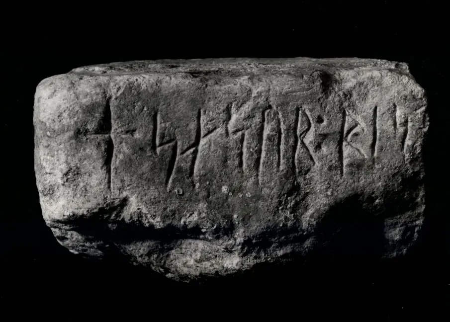
Das obige Foto wurde der digitalen Sammlung des Nationalmuseums Kopenhagen entnommen. Es wurde im Mai 1979 von Lennart Larsen aufgenommen - Lizenz: CC-BY-SA
Über die dänische Runendatenbank findet man hier alle Infos zu diesem Runenstein.
Über diesen Link finden sich zu dem Runenstein Informationen des Forschungsprojektes "Runes" der Akademie der Wissenschaften zu Göttingen.
Literaturhinweis:
Moltke, Erik: "Falske" runeindskrifter - in: Nationalmuseets Arbejdsmark 1982 S. 5-12. Kopenhagen